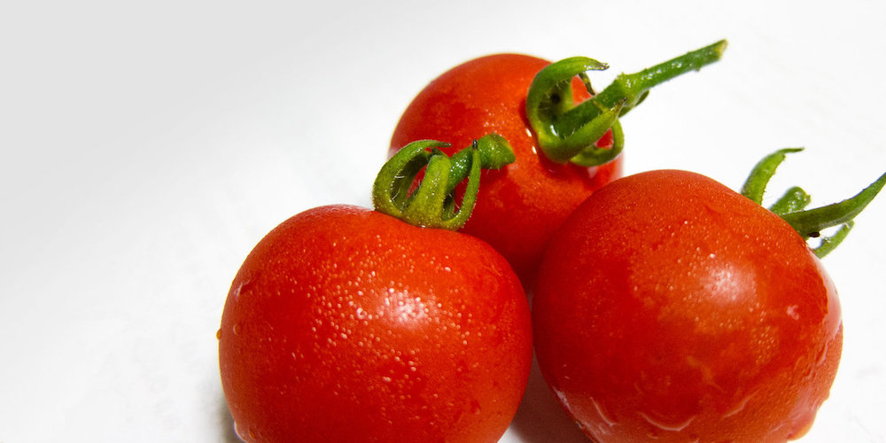

<!DOCTYPE html>
<html lang="en">
<head>
  <meta charset="UTF-8">
  <meta name="viewport" content="width=device-width, initial-scale=1.0">
  <meta http-equiv="X-UA-Compatible" content="ie=edge">
  <title>Document</title>
  <link rel="stylesheet" href="style.css">
  <link href="https://fonts.googleapis.com/css?family=Faster+One" rel="stylesheet">
  <link rel="stylesheet" href="https://use.fontawesome.com/releases/v5.0.13/css/all.css" integrity="sha384-DNOHZ68U8hZfKXOrtjWvjxusGo9WQnrNx2sqG0tfsghAvtVlRW3tvkXWZh58N9jp" crossorigin="anonymous">
</head>
<body>
  <div class="box1">
    <div class="site">
    <h1><a href="#">TimeSwitch</a></h1>
  </div>
</div>

  <div class="box2">
    <nav class="menu">
      <ul>
        <li><a href="">トップ</a></li>
        <li><a href="">雑貨</a></li>
        <li><a href="">ガジェット</a></li>
        <li><a href="">お出掛け</a></li>
        <li><a href="">食べ物</a></li>
        <li><a href="">お問い合わせ</a></li>
      </ul>
    </nav>
  </div>

  <div class="boxA">
   <div class="box3">
     <article class="kiji">
       <div class="kijicat">
         <ul class="cf">
           <li><a href="#">食べ物</a></li>
           <li><a href="#">お出かけ</a></li>
         </ul>
       </div>
       <h2>もぎたてトマトを美味しく食べたい！</h2>
       <div class="kijiinfo">
         <i class="far fa-clock"></i><time datetime="2018-06-13">2018年06月13日</time>
       </div>
       
       <p>
         <br>
   もぎたてのトマトを食べたくなって、ちょっと郊外にあるトマト農家さんの直売所まで行ってきました。
   ここのトマトは新鮮で、美味しくて、お安いという、とってもお買い得なトマトなんです。
      </p>

      <h3>新鮮なトマトの見分け方</h3>
       <p>
  もぎたての新鮮なトマトは、ヘタが緑色でみずみずしく、シャキッとしています。
  赤い実は皮がピンと張り、つるっと丸いものがいいのだとか。糖度の高いトマトは水に沈むそうですが、
  何でも甘ければいいというものではないので、好みの味のトマトを作る農家さんを見つけたいところです。
  何と言っても、もぎたてトマトは水洗いしてそのまま食べるのが一番です。暑い日に美味しいトマトにかぶりつくと、それだけで幸せになれます。水分補給もできるので一石二鳥です。<br>
    </p>

    <h3>もぎたてトマトのおいしい食べ方</h3>
    <p>
  もちろん、何かをつけたり、かけたりして食べるのも美味しいです。定番としては、塩、砂糖、マヨネーズ、オリーブオイルなどがおすすめ。
  <br>
    </p>
    <div class="share">
      <ul>
        <li><a href=""  class="share-tw"><i class="fab fa-twitter"><span>Twitter</span>でシェア</i></a></li>
        <li><a href=""  class="share-fb"><i class="fab fa-facebook-f"><span>facebook</span>でシェア</i></a></li>
        <li><a href=""  class="share-gg"><i class="fab fa-google-plus-g"><span>google+</span>でシェア</i></a></li>
      </ul>
    </div>
  </article>
   </div>
   <div class="box4">
         <nav class="sidemenu">

    <div class="box4-1">
       <h3>特集記事</h3>
       <ul>
         <li><a href=""><i class="fa fa-caret-right"></i>わかりやすい地図の読み方</a></li>
         <li><a href=""><i class="fa fa-caret-right"></i>苗から始めるトマト作り</a></li>
         <li><a href=""><i class="fa fa-caret-right"></i>料理とスマホの便利な関係</a></li>
         <li><a href=""><i class="fa fa-caret-right"></i>バッテリーを長持ちさせる方法</a></li>
         <br>
       </ul>

       <h3>おすすめ記事</h3>
       <aside class="osusume">
       <ul>
         <li><a href="">
           <div class="text">初めてのフラワーアレジメント</div></a></li>
         <li><a href="">
            <div class="text">古い端末が出てきたので充電してみたら…</div></a></li>
         <br>
         <br>
       </ul>
      </aside>
     </div>

       <div class="box4-2">
         <aside class="ninki">
       <h3>人気の記事</h3>
       <ul>
         <li>
           <a href="#">
             
             <div class="text">花好きにおすすめの鑑賞スポット
               <span>スマホ&タブレット</span></div></a></li>
         <li>
           <a href="#">
             
             <div class="text">通話アプリの便利な使い方<span>おでかけ</span></div></a></li>
         <li>
           <a href="#">
             
             <div class="text">森林浴＆温泉を満喫するならココ！<span>おでかけ</span></div></a></li>
         <li>
           <a href="#">
             
           <div class="text">世界各地の買い物袋<span>おでかけ</span></div></a></li>
         <li>
           <a href="#">
             
             <div class="text">部屋を彩るカラフルな家具<span>おでかけ</span></div></a></li>
         <li>
           <a href="#">
             
             <div class="text">海の中で出会ったものたち<span>おでかけ</span></div></a></li>
       </ul>
        </aside>
     </div>

   </nav>
   </div>
  </div>
  <div class="box5">Copyright © TimeSwitch</div>

</body>
</html>
